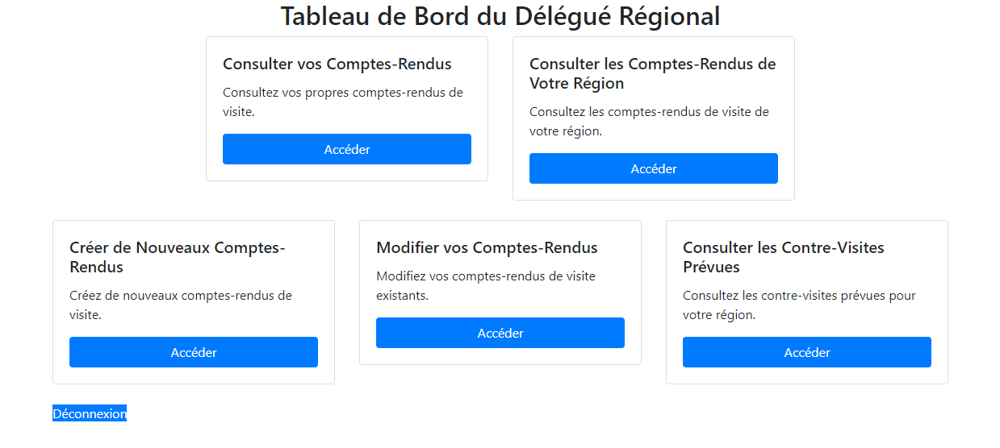
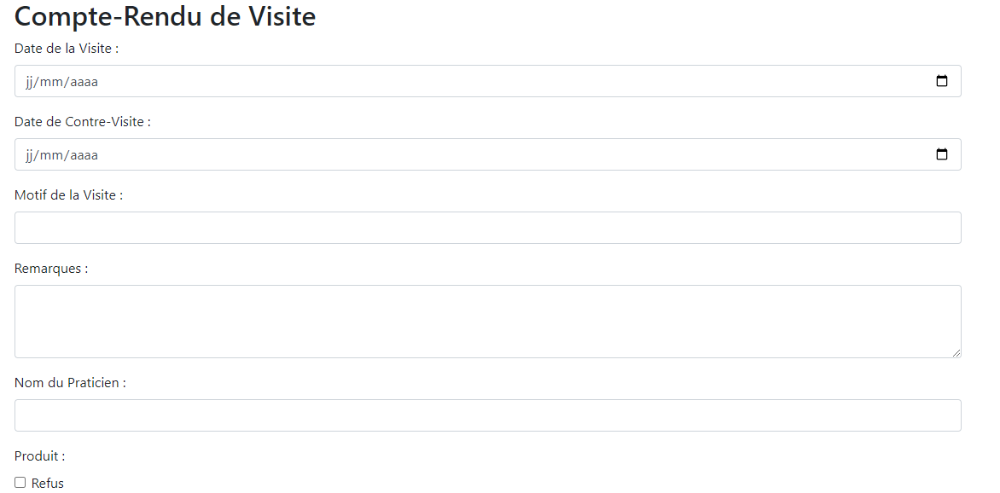

Ce projet a été une expérience collaborative et enrichissante, réalisée au sein d'un groupe de quatre personnes passionnées. Notre objectif était de créer une application de gestion des comptes rendus pour l'entreprise pharmaceutique GSB. Cette tâche nous a permis de plonger dans les profondeurs de la programmation web, en utilisant principalement le langage PHP en combinaison avec l'outil de gestion de base de données phpMyAdmin.
Nous avons également mis à profit nos compétences en HTML et CSS pour assurer que l'interface utilisateur soit à la fois esthétiquement plaisante et fonctionnelle. L'aspect visuel de l'application était crucial, car il devait refléter le professionnalisme et la fiabilité de l'entreprise GSB, tout en étant intuitif pour ses utilisateurs. Le challenge résidait dans la création d'une interface qui soit non seulement attrayante, mais aussi ergonomique et facile à naviguer.
L'utilisation de GitHub en tant qu'outil de versionnage et de collaboration a joué un rôle essentiel dans la gestion efficace de notre projet. Grâce à GitHub, nous avons pu travailler ensemble de manière synchronisée, en partageant nos codes et en intégrant nos différentes parties de manière fluide. Cela a été une expérience précieuse pour comprendre l'importance de la collaboration et de la communication dans le développement de logiciels.
Ce projet m'a offert une occasion unique de découvrir de nouveaux langages et technologies, tout en me familiarisant avec des logiques et méthodologies de développement web. Gérer une application complète de A à Z en équipe m'a permis de développer des compétences importantes en gestion de projet, en programmation, mais aussi en travail d'équipe et en communication. Cela a été une étape déterminante dans mon développement professionnel et personnel.
 